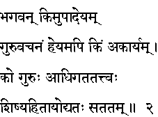
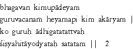

|

|
Verse 2 - Meaning:
Q: What deserves full and unquestioned acceptance ?
A:The instructions and orders of the Guru (guru vachanam)
Q: What is to be rejected?
A:Those things that one should not do or what is evil.[akaryam is the negative part of karyam which is any normal duty that one is permitted to do]
Q: Who can be considered as a Guru (the spiritual teacher)?
A:That one who knows the truth, who lives in and as truth and who always (satatam) strives for the good of his (hita) disciple(s) (sishya).
|